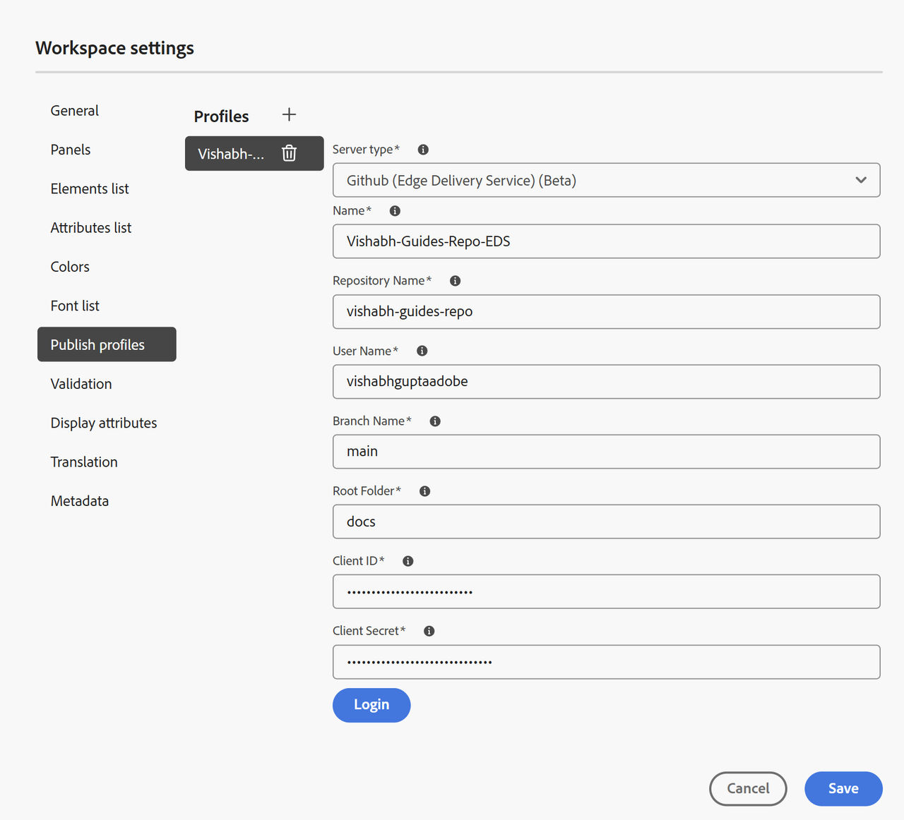
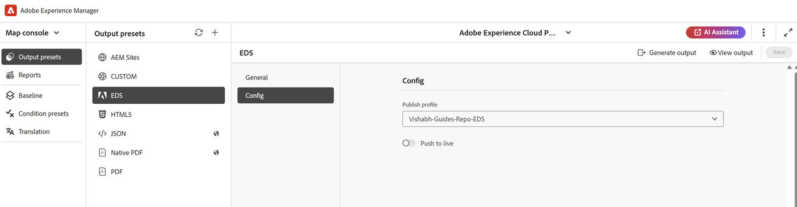

This section outlines each step in sequence and explain how to set up EDS publish profile, configure an output preset, and generate output using EDS in Experience Manager Guides.
Create the EDS publish profile
To create the EDS publish profile:
Go to Workplace Settings>Publish profiles.
Select the + icon to create a new publish profile and provide the following details:
Server type: Select GitHub Edge Delivery Services from the dropdown.
Name: Enter a name for this profile .
Repository name: Use the GitHub repository name created from the boilerplate.
Username: Enter your GitHub username.
Branch main: Set to main (default).
Root folder: Set to docs (default).
Client ID and Client Secret: Fetch these from your GitHub OAuth credentials stored earlier.
Select Login to authenticate.
On successful authentication, select Save.

Once your EDS publish profile is configured, you can now create an output present and generate output from AEM Guides.
Create an Output preset for EDS and generate output
To create an Output preset for EDS and generate output
Open your map in Map console.
In the Output presets tab, select + to create a new output preset.
In the New output preset dialog, provide the following details:
Type: Select Edge Delivery Service
Name: Provide a name for this preset
Select Add.
Open the newly created EDS output preset and navigate to the Config tab.
Select the publish profile created in the previous step.
Enable Push to live.
When Push to live is enabled, the generated output is committed to GitHub, and the corresponding updates are propagated to the live website immediately
Select Save, and then Generate output.

The generated output is stored in the docs folder of the EDS repository.